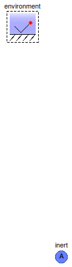

Table of Contents
- User's Guide
- Blocks
- Conditions
- Assemblies
- Regions
- Subregions
- Connectors
- Characteristics
- Units
- Quantities
- BaseClasses
Download
- Latest version (**Empty; please check back soon or contact kdavies4 at gmail.com.)

Licensed by the Georgia Tech Research Corporation under the Modelica License 2
Copyright 2007–2012, Georgia Tech Research Corporation.
This Modelica package is free software and the use is completely at your own risk; it can be redistributed and/or modified under the terms of the Modelica License 2. For license conditions (including the disclaimer of warranty) see FCSys.UsersGuide.ModelicaLicense2 or visit http://www.modelica.org/licenses/ModelicaLicense2.
Extends from Modelica.Icons.Package (Icon for standard packages).
| Name | Description |
|---|---|
| Examples | |
| Subregion with all phases | |
| Subregion with only the ionomer phase | |
| Subregion with all phases except ionomer | |
| Phases or mixtures of species | |
| Models for single-species, single-phase storage, transport, and exchange of material, translational momentum, and energy | |
| ChemicalExchange | Model to impose stoichiometry and properties on a species in a reaction |
| DoubleLayer | Electrochemical double layer |
| Volume | Model to establish a fixed total volume |
| Base classes (generally not for direct use) |
 FCSys.Subregions.Subregion
FCSys.Subregions.Subregion

At least one configuration must be included. H2O gas is included by default.
Please see the documentation of the EmptySubregion model.
Extends from FCSys.Subregions.BaseClasses.EmptySubregion (Base model for multi-dimensional, multi-species storage, transport, and exchange).
| Type | Name | Default | Description |
|---|---|---|---|
| Geometry | |||
| Length | L[Axis] | {U.cm,U.cm,U.cm} | Lengths (L) [l] |
| Phases (click to edit) | |||
| Gas | gas | Gas | |
| Graphite | graphite | Graphite | |
| Ionomer | ionomer | Ionomer | |
| Liquid | liquid | Liquid | |
| Included reactions | |||
| Boolean | inclHOR | graphite.'incle-' and ionome… | Hydrogen oxidation |
| Boolean | inclORR | graphite.'incle-' and ionome… | Oxygen reduction |
| Assumptions | |||
| Axes with translational momentum included | |||
| Boolean | inclTransX | true | X |
| Boolean | inclTransY | true | Y |
| Boolean | inclTransZ | true | Z |
| Axes with faces included | |||
| Boolean | inclFacesX | true | X |
| Boolean | inclFacesY | true | Y |
| Boolean | inclFacesZ | true | Z |
| Type | Name | Description |
|---|---|---|
| FaceBus | xNegative | Negative face along the x axis |
| FaceBus | xPositive | Positive face along the x axis |
| FaceBus | yNegative | Negative face along the y axis |
| FaceBus | yPositive | Positive face along the y axis |
| FaceBus | zNegative | Negative face along the z axis |
| FaceBus | zPositive | Positive face along the z axis |
model Subregion "Subregion with all phases" extends FCSys.Subregions.BaseClasses.EmptySubregion(final hasSpecies=gas.n_spec + graphite.n_spec + ionomer.n_spec + liquid.n_spec > 0, volume( n_phases=4)); Phases.Gas gas( inclH2O=true, final n_faces=n_faces, final inclHOR=inclHOR, final inclORR=inclORR) "Gas"; Phases.Graphite graphite( final n_faces=n_faces, final inclHOR=inclHOR, final inclORR=inclORR) "Graphite"; Phases.Ionomer ionomer( final n_faces=n_faces, final inclHOR=inclHOR, final inclORR=inclORR) "Ionomer"; Phases.Liquid liquid(final n_faces=n_faces) "Liquid"; parameter Boolean inclHOR=graphite.'incle-' and ionomer.'inclH+' and gas.inclH2 "Hydrogen oxidation"; parameter Boolean inclORR=graphite.'incle-' and ionomer.'inclH+' and gas.inclO2 and gas.inclH2O "Oxygen reduction"; FCSys.Subregions.DoubleLayer reaction if inclHOR or inclORR "Electrochemical reaction"; protected Connectors.PhysicalBusInternal physical if gas.inclH2O or ionomer.inclH2O or liquid.inclH2O "Connector for phase change"; equation // Phase change connect(gas.physical, physical); connect(ionomer.physical, physical); connect(liquid.physical, physical); // Chemical reactions connect(reaction.chemical, gas.chemical); connect(reaction.chemical, graphite.chemical); connect(reaction.chemical, ionomer.chemical); // Phases // ------ // Gas connect(gas.inertDalton, volume.inertDalton[1]); connect(gas.xNegative, xNegative.gas); connect(gas.xPositive, xPositive.gas); connect(gas.yNegative, yNegative.gas); connect(gas.yPositive, yPositive.gas); connect(gas.zNegative, zNegative.gas); connect(gas.zPositive, zPositive.gas); // Graphite connect(graphite.inertDalton, volume.inertDalton[2]); connect(graphite.xNegative, xNegative.graphite); connect(graphite.xPositive, xPositive.graphite); connect(graphite.yNegative, yNegative.graphite); connect(graphite.yPositive, yPositive.graphite); connect(graphite.zNegative, zNegative.graphite); connect(graphite.zPositive, zPositive.graphite); // Ionomer connect(ionomer.inertDalton, volume.inertDalton[3]); connect(ionomer.xNegative, xNegative.ionomer); connect(ionomer.xPositive, xPositive.ionomer); connect(ionomer.yNegative, yNegative.ionomer); connect(ionomer.yPositive, yPositive.ionomer); connect(ionomer.zNegative, zNegative.ionomer); connect(ionomer.zPositive, zPositive.ionomer); // Liquid connect(liquid.inertDalton, volume.inertDalton[4]); connect(liquid.xNegative, xNegative.liquid); connect(liquid.xPositive, xPositive.liquid); connect(liquid.yNegative, yNegative.liquid); connect(liquid.yPositive, yPositive.liquid); connect(liquid.zNegative, zNegative.liquid); connect(liquid.zPositive, zPositive.liquid); end Subregion;
FCSys.Subregions.SubregionIonomerOnly

At least one configuration must be included. H2O is included by default.
Please see the documentation of the EmptySubregion model.
Extends from FCSys.Subregions.BaseClasses.EmptySubregion (Base model for multi-dimensional, multi-species storage, transport, and exchange).
| Type | Name | Default | Description |
|---|---|---|---|
| Geometry | |||
| Length | L[Axis] | {U.cm,U.cm,U.cm} | Lengths (L) [l] |
| Phases (click to edit) | |||
| Ionomer | ionomer | Ionomer | |
| Assumptions | |||
| Axes with translational momentum included | |||
| Boolean | inclTransX | true | X |
| Boolean | inclTransY | true | Y |
| Boolean | inclTransZ | true | Z |
| Axes with faces included | |||
| Boolean | inclFacesX | true | X |
| Boolean | inclFacesY | true | Y |
| Boolean | inclFacesZ | true | Z |
| Type | Name | Description |
|---|---|---|
| FaceBus | xNegative | Negative face along the x axis |
| FaceBus | xPositive | Positive face along the x axis |
| FaceBus | yNegative | Negative face along the y axis |
| FaceBus | yPositive | Positive face along the y axis |
| FaceBus | zNegative | Negative face along the z axis |
| FaceBus | zPositive | Positive face along the z axis |
model SubregionIonomerOnly "Subregion with only the ionomer phase" extends FCSys.Subregions.BaseClasses.EmptySubregion(final hasSpecies=ionomer.n_spec > 0, volume(n_phases=1)); Phases.Ionomer ionomer( final n_faces=n_faces, inclH2O=true, final inclHOR=false, final inclORR=false) "Ionomer"; equation // Ionomer connect(ionomer.inertDalton, volume.inertDalton[1]); connect(ionomer.xNegative, xNegative.ionomer); connect(ionomer.xPositive, xPositive.ionomer); connect(ionomer.yNegative, yNegative.ionomer); connect(ionomer.yPositive, yPositive.ionomer); connect(ionomer.zNegative, zNegative.ionomer); connect(ionomer.zPositive, zPositive.ionomer); end SubregionIonomerOnly;
FCSys.Subregions.SubregionNoIonomer

At least one configuration must be included. H2O gas is included by default.
Please see the documentation of the EmptySubregion model.
Extends from FCSys.Subregions.BaseClasses.EmptySubregion (Base model for multi-dimensional, multi-species storage, transport, and exchange).
| Type | Name | Default | Description |
|---|---|---|---|
| Geometry | |||
| Length | L[Axis] | {U.cm,U.cm,U.cm} | Lengths (L) [l] |
| Phases (click to edit) | |||
| Gas | gas | Gas | |
| Graphite | graphite | Graphite | |
| Liquid | liquid | Liquid | |
| Assumptions | |||
| Axes with translational momentum included | |||
| Boolean | inclTransX | true | X |
| Boolean | inclTransY | true | Y |
| Boolean | inclTransZ | true | Z |
| Axes with faces included | |||
| Boolean | inclFacesX | true | X |
| Boolean | inclFacesY | true | Y |
| Boolean | inclFacesZ | true | Z |
| Type | Name | Description |
|---|---|---|
| FaceBus | xNegative | Negative face along the x axis |
| FaceBus | xPositive | Positive face along the x axis |
| FaceBus | yNegative | Negative face along the y axis |
| FaceBus | yPositive | Positive face along the y axis |
| FaceBus | zNegative | Negative face along the z axis |
| FaceBus | zPositive | Positive face along the z axis |
model SubregionNoIonomer "Subregion with all phases except ionomer" extends FCSys.Subregions.BaseClasses.EmptySubregion(final hasSpecies=gas.n_spec + graphite.n_spec + liquid.n_spec > 0, volume(n_phases=3)); Phases.Gas gas( inclH2O=true, final n_faces=n_faces, final inclHOR=false, final inclORR=false) "Gas"; Phases.Graphite graphite( final n_faces=n_faces, final inclHOR=false, final inclORR=false) "Graphite"; Phases.Liquid liquid(final n_faces=n_faces) "Liquid"; protected Connectors.PhysicalBusInternal physical "Connector for phase change"; equation // Phase change connect(physical, gas.physical); connect(physical, liquid.physical); // Phases // ------ // Gas connect(gas.inertDalton, volume.inertDalton[1]); connect(gas.xNegative, xNegative.gas); connect(gas.xPositive, xPositive.gas); connect(gas.yNegative, yNegative.gas); connect(gas.yPositive, yPositive.gas); connect(gas.zNegative, zNegative.gas); connect(gas.zPositive, zPositive.gas); // Graphite connect(graphite.inertDalton, volume.inertDalton[2]); connect(graphite.xNegative, xNegative.graphite); connect(graphite.xPositive, xPositive.graphite); connect(graphite.yNegative, yNegative.graphite); connect(graphite.yPositive, yPositive.graphite); connect(graphite.zNegative, zNegative.graphite); connect(graphite.zPositive, zPositive.graphite); // Liquid connect(liquid.inertDalton, volume.inertDalton[3]); connect(liquid.xNegative, xNegative.liquid); connect(liquid.xPositive, xPositive.liquid); connect(liquid.yNegative, yNegative.liquid); connect(liquid.yPositive, yPositive.liquid); connect(liquid.zNegative, zNegative.liquid); connect(liquid.zPositive, zPositive.liquid); end SubregionNoIonomer;
 FCSys.Subregions.ChemicalExchange
FCSys.Subregions.ChemicalExchange
This model is essentially an adapter between the Chemical and the ChemicalNet connectors. It should be instantiated once for each species in a reaction.
Extends from FCSys.BaseClasses.Icons.Names.Top1.
| Type | Name | Default | Description |
|---|---|---|---|
| Integer | n | Stoichiometric coefficient | |
| MassSpecific | m | Specific mass [m/N] |
| Type | Name | Description |
|---|---|---|
| ChemicalNet | reaction | Reaction-side connector |
| Chemical | species | Species-side connector |
model ChemicalExchange "Model to impose stoichiometry and properties on a species in a reaction" extends FCSys.BaseClasses.Icons.Names.Top1; parameter Integer n "Stoichiometric coefficient"; parameter Q.MassSpecific m "Specific mass"; // Auxiliary variables (for analysis) output Q.Velocity phi_actualStream[n_trans](each stateSelect=StateSelect.never) = actualStream(species.phi) if environment.analysis "Velocity of the actual stream"; output Q.PotentialAbsolute sT_actualStream(stateSelect=StateSelect.never) = actualStream(species.sT) if environment.analysis "Specific entropy-temperature product of the actual stream"; Connectors.ChemicalNet reaction(final n_trans=n_trans) "Reaction-side connector"; Connectors.Chemical species(final n_trans=n_trans) "Species-side connector"; protected outer parameter Integer n_trans "Number of components of translational momentum"; outer Conditions.Environment environment "Environmental conditions"; equation // Conditions reaction.mu = n*species.mu; reaction.phi = species.phi; reaction.sT = species.sT; // Conservation (without storage) 0 = species.Ndot + n*reaction.Ndot "Material"; zeros(n_trans) = reaction.mPhidot + m*actualStream(species.phi)*species.Ndot "Translational momentum"; 0 = reaction.Qdot + actualStream(species.sT)*species.Ndot "Thermal energy"; end ChemicalExchange;
This model introduces the electrostatic potential associated with the diffusion of a charge carrier across the depletion region. The potential is added to the stoichiometrically-weighted sum of the chemical potentials of the reactants and products, resulting in the total potential of an electrochemical reaction. Due to the equations of the charge carrier (an instance of the Species model), the electrostatic potential motivates the charge carrier to or from the reaction. This has the effect of the Butler-Volmer equation.
The quotient of the amount of material diffused across the junction and the electrostatic potential is the capacitance (C = N/μ). It is assumed to be equal to the permittivity (ε, a parameter) times the cross-sectional area divided by the length (C = εA/L).
This model is typically instantiated for each of the two charge carriers (positive and negative) in an electrochemical reaction. The chemical potential is split between the two, which results in a nominal charge transfer coefficient of one half (depending on mobility and other parameters of the Species instances for the charge carriers).
If transSubstrate is true, then the translational momentum of the
reactants is passed to the substrate through the inert
connector and the products are produced at the velocity of the substrate (typically
zero). If it is false, then translational momentum is passed
directly from the reactants to the products.
Even if an initialization parameter (NIC or μIC) is not selected for explicit use, it may be used a guess value.
Extends from FCSys.BaseClasses.Icons.Names.Top2.
| Type | Name | Default | Description |
|---|---|---|---|
| Geometry | |||
| Length | L | 0.1*U.mm | Length [l] |
| Area | A | 100*U.cm^2 | Cross-sectional area [l2] |
| Axis | axis | Axis.x | Majority-minority axis |
| Side | minoritySide | Side of the minority region | |
| Material properties | |||
| Permittivity | epsilon | U.epsilon_0 | Permittivity [N2.T2/(l3.m)] |
| Assumptions | |||
| Boolean | transSubstrate | true | Pass translational momentum through the substrate |
| Initialization | |||
| InitCapacitor | initCapacitor | InitCapacitor.SS | Method of initialization |
| Amount | N_IC | 0 | Initial amount (NIC) [N] |
| Potential | mu_IC | 0 | Initial potential (μIC) [l2.m/(N.T2)] |
| Type | Name | Description |
|---|---|---|
| ChemicalNet | chemical | Chemical connector |
| Inert | inert | Interface with the substrate |
| Face | majority | Interface to the majority region |
| Face | minority | Far side of the minority region |
model DoubleLayer "Electrochemical double layer" import FCSys.BaseClasses.Utilities.cartWrap; import FCSys.BaseClasses.Utilities.inSign; extends FCSys.BaseClasses.Icons.Names.Top2; // Geometry parameter Q.Length L=0.1*U.mm "Length"; parameter Q.Area A=100*U.cm^2 "Cross-sectional area"; parameter Axis axis=Axis.x "Majority-minority axis"; parameter Side minoritySide "Side of the minority region"; // Material characteristics replaceable package Data = Characteristics.IdealGas constrainedby Characteristics.BaseClasses.CharacteristicEOS "Characteristic data"; parameter Q.Permittivity epsilon=U.epsilon_0 "Permittivity"; final parameter Q.Capacitance C=epsilon*A/L "Capacitance"; // Assumptions parameter Boolean transSubstrate=true "Pass translational momentum through the substrate"; // Initialization parameter InitCapacitor initCapacitor=InitCapacitor.SS "Method of initialization"; parameter Q.Amount N_IC=0 "Initial amount (NIC)"; parameter Q.Potential mu_IC=0 "Initial potential (μIC)"; Q.Amount N( final start=N_IC, final fixed=false, stateSelect=StateSelect.prefer) "Amount of material diffused from the majority to the minority side"; Connectors.ChemicalNet chemical(final n_trans=n_trans,mu(final start=mu_IC, final fixed=false)) "Chemical connector"; Connectors.Inert inert(final n_trans=n_trans) "Interface with the substrate"; Connectors.Face majority "Interface to the majority region"; Connectors.Face minority "Far side of the minority region"; protected outer parameter Integer n_trans "Number of components of translational momentum"; initial equation if initCapacitor == InitCapacitor.SS then der(N) = 0; elseif initCapacitor == InitCapacitor.Amount then N = N_IC; elseif initCapacitor == InitCapacitor.Potential then chemical.mu = mu_IC; // Else there's no initial equation since // initCapacitor == InitCapacitor.None. end if; equation // Conditions // ---------- // Material minority.rho = majority.rho*exp(chemical.mu/inert.thermal.T) "Integrated result of advection canceling diffusion over the entire double layer"; minority.Ndot + inSign(minoritySide)*minority.rho*A*minority.phi[1] = 0 "Advection cancels diffusion at the far side of the minority region"; C*chemical.mu = N "Static potential is applied to the reaction"; // // Translational 0 = majority.mPhidot[1] - inSign(minoritySide)*Data.p_Tv(majority.T, 1/ majority.rho)*A "Translational momentum balances on the majority side"; 0 = minority.mPhidot[1] - inSign(minoritySide)*Data.p_Tv(minority.T, 1/ minority.rho)*A "Translational momentum balances on the minority side"; majority.mPhidot[2:3] = zeros(2) "No shear force on the majority side"; minority.mPhidot[2:3] = zeros(2) "No shear force on the minority side"; if transSubstrate then chemical.phi = inert.translational.phi "Products produced at the velocity of the substrate"; else chemical.mPhidot = zeros(n_trans) "Translational momentum passed directly from the reactants to the products"; end if; // // Thermal majority.Qdot = 0 "No heat transfer from the majority region"; minority.Qdot = 0 "No heat transfer from the minority region"; chemical.Qdot = 0 "No heat transfer from the reaction stream"; // Conservation (excluding terms which are zero above) der(N)/U.s = majority.Ndot "Material"; zeros(n_trans) = chemical.mPhidot + inert.translational.mPhidot "Translational momentum (no storage)"; 0 = chemical.mu*chemical.Ndot + inert.translational.phi*inert.translational.mPhidot + inert.thermal.Qdot "Energy (no storage)"; end DoubleLayer;

This model combines the mixtures connected to its inertDalton[:]
array using additivity of volume. An entry is added to this array each time a connection is made
(using connectorSizing). Each entry establishes a network of
InertDalton connectors.
The species connected to each network are combined using additivity of pressure.
The concept of "additivity of volume" is defined by Amagat's law of partial volumes, which states that the partial extensive volumes of the components of a mixture sum to the total extensive volume of the mixture [Bejan2006, p. 194]. The specific or molar volumes of the species are each evaluated at the temperature and the total pressure of the mixture.
This concept loses its physical meaning once the species are mixed [Woo1995]. If the species are truly mixed, then it is impossible to distinguish their particles and thus determine their partial volumes. Therefore, the concept is only used for distinct phases within the same subregion—not for species within a phase. For example, if a system contains a solid phase and a gas phase, then it is assumed that the partial volumes of the mixtures are additive and the mixtures exist at the same pressure. Within a phase, the species are mixed according to Dalton's law of partial pressures (see the InertDalton connector).
Please also see the the documentation for the Connectors package.
| Type | Name | Description |
|---|---|---|
| InertDalton | inertDalton[n_phases] | Connector for translational momentum and thermal energy |
model Volume "Model to establish a fixed total volume" // extends FCSys.BaseClasses.Icons.Names.Top7; outer parameter Q.Volume V "Volume"; // The check fails if this is protected in Dymola 7.4, so // HideResult=true is used instead. parameter Integer n_phases(min=1) = 0 "Number of phases"; Connectors.InertDalton inertDalton[n_phases](each n_trans=n_trans) "Connector for translational momentum and thermal energy"; protected outer parameter Integer n_trans "Number of components of translational momentum"; equation if n_phases > 0 then if n_phases > 1 then // Equal properties (KVL) inertDalton[1:n_phases - 1].p = inertDalton[2:n_phases].p "Pressures"; inertDalton[1:n_phases - 1].phi = inertDalton[2:n_phases].phi "Velocities"; inertDalton[1:n_phases - 1].T = inertDalton[2:n_phases].T "Temperatures"; end if; // Conservation (KCL) V = sum(inertDalton.V) "Volume (fixed)"; zeros(n_trans) = sum(inertDalton[i].mPhidot for i in 1:n_phases) "Translational momentum (no storage)"; 0 = sum(inertDalton.Qdot) "Energy (no storage)"; end if; end Volume;